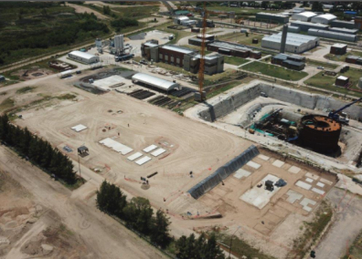
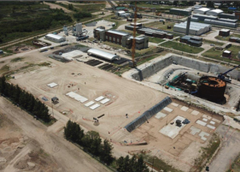

Consultoría de Ingeniería
Sobre la experiencia local e internacional, se ha podido basar la consultoría y asistencia técnica para proyectos de las especialidades más complejas.
Estas especialidades se realizan sobre la base de una sólida experiencia académica y profesional, con referencia a experiencia empírica de proyectos reales exitosos con soluciones probadas como así fundamento teórico de las mismas y de nuevas soluciones. Esto nos ha permitido ser pioneros en soluciones innovadoras y con excelentes resultados.
 


- - Diseño de fundaciones superficiales
- - Diseño de fundaciones profundas
- - Submuraciones y anclajes
- - Tablestacados
- - Diseño de fundaciones complejas
- - Diseño de estructuras geotécnicas
- - Geotecnia de obras viales
- - Geotécnica de obras portuarias
- - Geotecnia de Dragado
- - Tunelería
- - Estructuras temporales
- - Asesoramiento geotécnico
- - Consultoría de especialidad
- - Ingeniería de estructuras de hormigón
- - Ingeniería de estructuras de Acero
- - Ingeniería de estructuras de madera y otros materiales
- - Desarrollo de planos constructivos
- - Memorias de cálculo
- - Inspecciones estructurales
- - Estudio de patologías
- - Ingeniería de fundaciones
- - Ingeniería de Recalces estructurales
- - Topografía y laboratorio asociados
- - Ingeniería Vial
- - Diseño de pavimentos
- - Ingeniería de movimiento de suelos
- - Laboratorio y ensayos de pavimentos
- - Estudios de Transito
- - Ingeniería Portuaria
- - Estructuras y geotecnia Portuaria
- - Ingeniería de Dragado
- - Ingeniería de obras aeroportuarias
- - Ingeniería Ferroviaria
- - Puentes ferroviarios
- - Viaductos
- - Ensayos de Carga de puentes
- - Ensayos dinámicos y estáticos
- - Diseño estructural relativo a los proyectos
- - Topografía relativa a los proyectos
- - Laboratorio relativo a los proyectos
- - Estudios de Base hidrológicos
- - Medición de parámetros
- - Estudios geotécnicos
- - GIS y generación de mapas
- - Estudio dinámico
- - Ingeniería Hidráulica de proyectos
- - Canales y drenajes
- - Abatimiento de acuíferos
- - Manejo del recurso hídrico
- - Obras hidráulicas y de conducción
- - Sedimentología
- - Dragados
- - Obras portuarias
- - Modelización matemática
- - Ingeniería de especialidad para proyectos
- - Topografía y laboratorios asociados